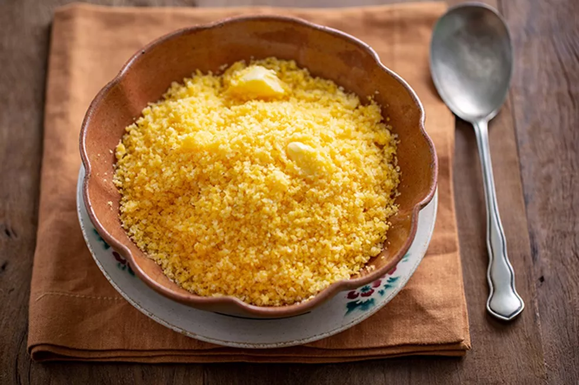

Cuscuz

Ingredientes
- 1 e meia xícara de chá de farinha de milho flocada
- Meia colher de chá de sal
- Três quartos de xícara de chá de água
- 2 colheres de sopa de manteiga
Modo de preparo
- Em uma tigela, misture a farinha de milho com o sal. Regue com a água aos poucos, mexendo com uma colher para umedecer a farinha – a
textura deve ficar como a de areia molhada, bem úmida. Deixe hidratar por 10 minutos – assim os flocos ficam mais macios
ao cozinhar no vapor.
- Preencha o fundo da cuscuzeira com água e encaixe o cesto de vapor na panela. Transfira a farinha de milho hidratada para o cesto, sem
compactar. Tampe e leve para cozinhar em fogo alto.
- Assim que começar a ferver, vai sair um leve vapor pela lateral da tampa. Abaixe o fogo e deixe cozinhar por mais 10 minutos até o cuscuz
ficar bem macio. Verifique ao abrir a tampa o cuscuz deve estar inflado macio ao toque.
- Desligue o fogo e, com cuidado para não se queimar ou virar o cesto, puxe a haste central para desenformar cuscuz. Transfira para uma
tigela e desfaça o cuscuz em pedaços com um garfo.
- Numa tigela pequena misture a manteiga com um quarto de xícara de chá da água fervente da cuscuzeira. Mexa com uma colher
até derreter pelo menos a metade da manteiga – ela termina de derreter com o calor do cuscuz.
- Regue a água com manteiga sobre o cuscuz e misture com o garfo – a água com manteiga deixa o cuscuz mais úmido e saboroso.
Sirva a seguir.